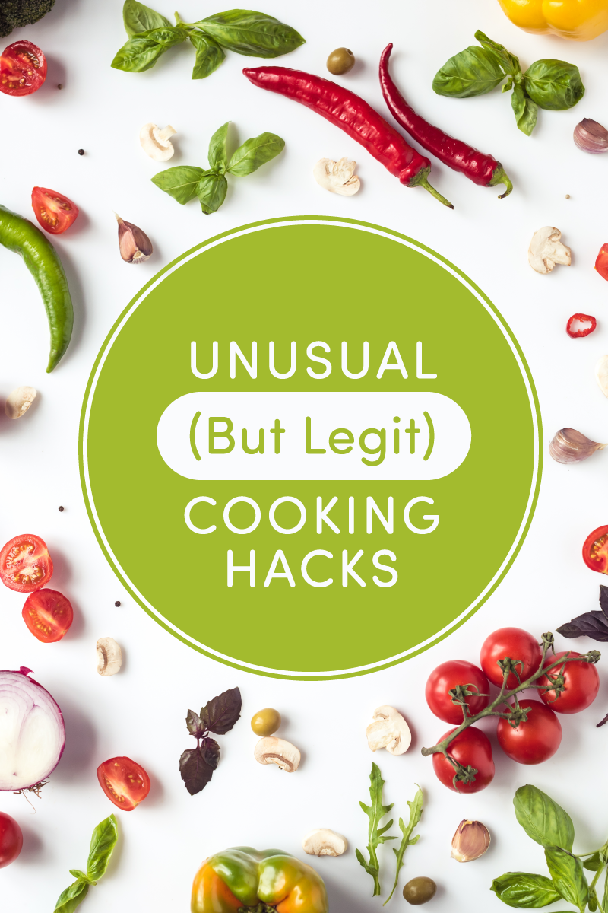
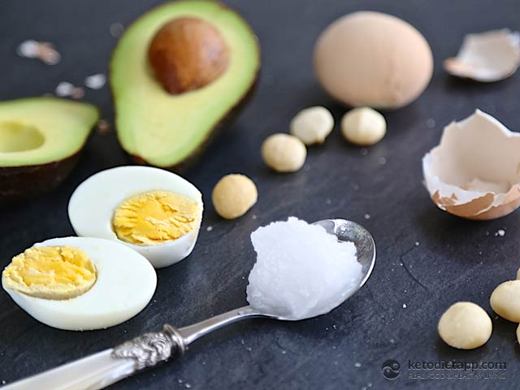

Cook Hacks
- Milk powder for your baked goods
Use milk powder to give your baked goods an added depth of dairy flavor. - Mayonnaise for fish to prevent it from sticking
Brush your fish with mayonnaise it is an easy way to make sure delicate fish fillets don't stick to the grill and rip apart. - Mayonnaise for your scrambled eggs
Cheefs suggests adding a dollop of mayonnaise instead. This added dose of fat keeps the scramble moist and creamy without changing the flavor, so mayo-haters can try this trick without worrying. - Caramelized white chocolate
Most people roast white chocolate directly in the oven, stirring it every now and then to prevent burning, but you can also do it much faster in the microwave. Just microwave the chocolate in 30-second increments, stirring in-between each, until it reaches your desired color. - Use silica packets in cooking
Silica packets are the perfect thing to keep delicate baked goods (such as sugar candies or shortbread cookies) dry and prevent them from getting soggy. Just place a silica packet in the same container you're storing your baked goods in and they'll stay nice and dry.

Weight Loss Ideas
- Drink Water, Especially Before Meals
Drinking water can boost metabolism by 24–30% over a period of 1–1.5 hours, helping you burn off a few more calories . One study showed that drinking a half-liter (17 ounces) of water about half an hour before meals helped dieters eat fewer calories and lose 44% more weight, compared to those who didn’t drink the water. - Eat Eggs For Breakfast
Eating whole eggs can have all sorts of benefits, including helping you lose weight. Studies show that replacing a grain-based breakfast with eggs can help you eat fewer calories for the next 36 hours as well as lose more weight and body fat - Drink Green Tea
Though green tea contains small amounts of caffeine, it is loaded with powerful antioxidants called catechins, which are believed to work synergistically with caffeine to enhance fat burning (9, 10Trusted Source). Although the evidence is mixed, many studies show that green tea (either as a beverage or a green tea extract supplement) can help you lose weight

Freeze fruit hacks
- Choose materials for Freezing Produce
Rigid plastic containers, glass containers, and jars come in handy for liquid or semi-solid foods, sauces, jams, and other preserves. You also can use freezer paper, freezer tape, and heavy-duty foil. They come in handy for packaging certain foods and for long-term storage. Long term means longer than the typical 6-12 months. The longer you store the food in the freezer, the more the quality declines, but it is still perfectly fine to eat. - Prepare Fruits & Vegetables for Freezing
You’ll want to wash all fruits and vegetables well, especially if you don’t plan on peeling them, and pat them dry with a paper towel or dishtowel. Some fruits and vegetables can be frozen whole, while others need to be peeled, pitted, and/or cut into smaller pieces. - Maintain the color and nutrients.
This will help with that, but it also helps maintain the color and nutrients, as well as killing any surface organisms that could lead to spoilage. Corn (though you could), tomatoes, onions, potatoes (including sweet), and winter squash don’t need to be blanched. And neither do fruits. Most vegetables also need to be blanched before freezing. - Label & Store Frozen Produce
You must to label the bags and containers with the date and the contents. You might think you’ll remember what it is, but six months down the road it might be more difficult to remember what was in each bag or container. Freezer tape will stay on the containers despite the cold temperature and the moisture. I like to run tape around the containers too, to keep out air and prevent hoar frost. Wrapping bags and containers in foil and taping will also help with that.